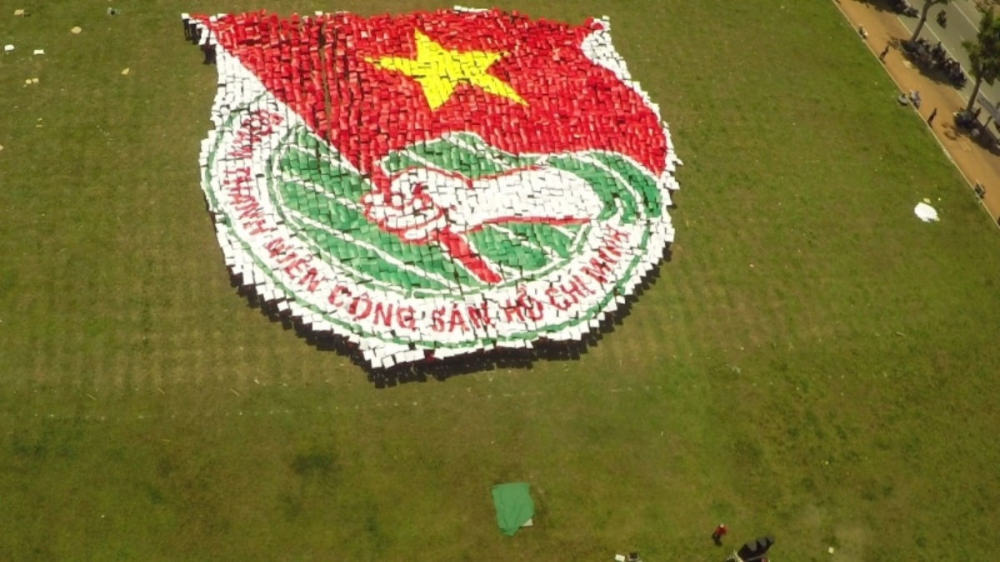

1. Mừng đất nước đổi mới
Canh Tý xuân sang đẹp tuyệt vời
Tết đến cờ bay đỏ thắm trời
Chúc Đảng thành công trong đổi mới
Mừng dân hạnh phúc sống vui tươi
Biển rừng sông núi chắc bờ cõi
Tổ quốc phồn vinh rộn tiếng cười
Vươn tầm trí tuệ theo gương Bác
Việt Nam hùng mạnh sáng đời đời.
(Tác giả: Nguyễn Kim Thanh)
2. Vào Đảng
Từ khi vào Đảng đến giờ
Lòng tôi hào khí phất cờ trong tim!
Ôi đường lối Mác – Lê Nin!
Bác Hồ đã chọn niềm tin giúp đời.
Giúp người cùng khổ muôn nơi
Phá tan xiềng xích sống đời tự do
Đảng dạy ta sống là cho
Làm người cách mạng phải lo dân giàu.
Lo hạnh phúc đến xưa sau!
Đời đời bền vững con tàu Đảng ta
Đảng như những chiếc sân ga!
Cho dân bến đỗ bài ca tự hào !
Đảng như biển rộng trời cao
Cho dân no ấm nhà cao xe dài!
Đảng ta không của riêng ai
Tình dân với Đảng như hai bạn hiền.
Sống trong đời sống an nhiên
Bắc Nam thống nhất hai miền từ lâu
Nhớ ngày kháng chiến thương đau
Bác Hồ hoạt động rừng sâu bến đò.
Kìa suối Lê Nin còn đó
Núi Các Mác hang Pác Bó còn đây
Ơn Người ta quyết dựng xây
Tình dân với Đảng tràn đầy tin yêu.
(Tác giả: Thanh Chương Lý)
3. Mừng thành công đại hội
Vui mừng Đại hội đã thành công
Trí tuệ toàn dân giữ hiệp đồng
Lãnh đạo quên mình xây tổ quốc
Nhân tài góp sức dựng non sông
Đề ra giải pháp như hình mẫu
Thiết lập niềm tin để hóa Rồng
Mãi nguyện theo Người, trung với Đảng
Song hành lịch sử của cha ông!
(Tác giả: Hung Thang)

